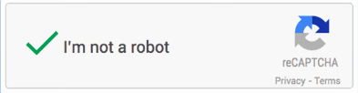

If it is art, it is fair use
 Grafiti Los conejos traviesos (Coords: 41.358247, 2.069731): Taken from Niantic Lab games
Grafiti Los conejos traviesos (Coords: 41.358247, 2.069731): Taken from Niantic Lab games
Prelude
A week ago, if you had asked me what I’d be writing about, “art” wouldn’t be on my list.
If anything, I would have guessed I would be writing about my electricity bill (which I downloaded hour-by-hour as a csv from ENDESA website), or maybe vent about undefined geopolitical areas and how they keep causing me issues anytime I am plotting stuff on maps.
But before I start talking about by-passing Google Authentication as a “robot” and data gaps, there is something else I want to mention first:
My favicon (that little icon you see on your browser) for this website was inspired by the workshop ART FROM CODE from Danielle Navarro, a course on computer-generated artwork using R which has its entire course material posted online.
Mind you, what I produced is the result of 10 minutes of work and reading. Which is nothing compared to the 10+ hours the entire course is supposed to take.
I expect to come back and iterate on this icon (favicon) in the future, which is why I have made a Github Repo to track its change.
Data scrapping
A lot of the work I have been doing lately as part of my doctoral studies involves downloading and processing data from a vast selection of (mostly publicly available) sources.
This can be as simple as clicking one or two buttons to download the dataset containing all the variables I want, or it can involve clicking 1,600 times for each combination of year, location, and variable I am looking for.
Epidemiological reports can be monthly, sometimes weekly, with no consistency whatsoever on how or where the data is presented.
Needless to say, I usually don’t do that myself and instead I set-up a script to automate the process for me.
Since I primarily use “R”, I rely on RSelenium to do my bidding, which is the R implementation of Selenium, an open source umbrella project for a range of tools and libraries aimed at supporting browser automation and more often than not, used for ‘web scrapping’.
In a couple lines of codes, you can open a browser (Chrome, Firefox, Opera, etc.) that you can manage through R.
## RSelenium - Web navigation and manipulation
if (!requireNamespace("RSelenium", quietly = TRUE)) install.packages("RSelenium")
library("RSelenium", character.only = TRUE)
## Start driver
rD <- rsDriver(port= sample(7600)[1], browser=c("firefox"),
chromever = NULL,
check = F,
verbose = FALSE
)
remDr <- rD$client
## Example: Navigate to Google
url <- "google.com"
remDr$navigate(url)
Whenever you open a browser using RSelenium, your browser will be labeled as a “robot” browser.

This can sometimes be an issue. Since a “robot” browser doesn’t(and maybe should not?)have the same permissions as non-automated users, some websites may block it.
For example. if a website requires an user to log in using a Google Account, the website won’t let you do this from a “robot” browser.
“Robots” do not have Google accounts after all.
A) Google Account Sign In pop-up
B) Error message when logging from a "robot" browser.
If for some reason you needed to workaround this limitation, you could do so by creating a profile in your (“non-robotic”) browser, and logging in to the website you want to access while your profile is enabled.
By doing this, you make your profile ‘remember you’ (and your credentials), and the next time you use your profile from other devices or browsers, it will ‘remember you’ and not ask for credentials again.
We can pass this profile as an argument for the function rsDriver() when initiating your “robot” browser with Rselenium.
# Setup profile to bypass Google Auth
## Enter 'about:profiles' on your browser to find your profile path.
## Replace USERNAME and xxxxxxxx with your data.
profile_path <- "C:\\Users\\USERNAME\\AppData\\Roaming\\Mozilla\\Firefox\\Profiles\\xxxxxxxx.default-release"
# Setup profile config
firefox_profile <- list(
`moz:firefoxOptions` = list(
args = list("--profile", profile_path)
)
)
# Start RSelenium Driver
## The extraCapabilities argument is what sets the profile up.
## Everything else are arguments I personally need to be able to run my own RSelenium.
## i.e. What argument you use might change depending on your own computer requirements.
rD <- rsDriver(port= sample(7600)[1], browser=c("firefox"),
chromever = NULL,
check = F,
extraCapabilities = firefox_profile,
verbose = FALSE
)
remDr <- rD$client
And now this “robot” could in theory use your ID and be able to impersonate you with your Google Account.
I don’t know why would someone need this, but might prove useful one day. Just make sure you always follow the websites terms of service.
Health data gaps
We live on a time of simultaneously having unprecedented amounts of data available, and yet somehow not enough data to answer some very serious (and urgent) questions.
There is a ‘gap’ between the data that exists out there, and the data we can (really) use.
Sometimes this ‘gap’ is the result of systems not equipped to register the data. They simply lack the capacity to do so.
The data could be registered, but it isn’t detailed or of enough quality to tackle more specific subjects. You can read an example about it in the comment published in BMJ ‘A lack of quality statistics is hiding the real heatwave death toll’ by Shetty D.
Dysfunctional systems are unable to register data, and if they do, it is incomplete or not accurate.
In other cases, the ‘gap’ is the result of data that cannot be used because of individual privacy, ethical aspects or legal issues.
The data ’exists’, but we cannot use it (and for good reason).
The comment ‘Who owns (or controls) health data?’ published in Scientific Data by Kahn, S.D. describes the ongoing debate on who (should?) control secondary use of health data, as well as the issues surrounding its ownership, which has historically been controlled by institutions and is nowadays shifting towards individuals.
One can overcome some of these ‘gaps’ by developing new methods of analysis and leverage what little imperfect data you might have. Continuing with the example of mortality data, the article published in Lancet Regional Health Europe ‘The effect of temporal data aggregation to assess the impact of changing temperatures in Europe: an epidemiological modelling study’ by Ballester, J. does precisely that by demonstrating you can use weekly data, instead of daily data, to obtain similar estimations of heat and cold related mortality.
In other cases, you might be able to process the data yourself by giving structure to what is otherwise unstructured and disorganized information. An example of this is the article published in PLOS Global Public Health ‘The World Health Organization’s Disease Outbreak News: A retrospective database’ by Carlson CJ., in which the authors developed an annotated database of the subjective and often inconsistent information the Word Health Organization publishes in their Disease Outbreak News (as bunch of .pdf files).
And while scraping data can help overcome some access hurdles, deeper systemic issues often limit the availability and usability of crucial data, particularly in public health, but in other fields as well.
Gatekeeping data
I have been mostly talking about health data because that is what I work with most days.
But what about other types of ‘public data’ (or files) that some institutions hold within them, like art?
Maybe out of ignorance, maybe due to technical limitations, but a lot of times data is not made available by policy and by design.
It could very easily be one (download) button away, but it is ‘kept away’ on purpose, or barriers are put in place to make it difficult to access its contents.
The data might be obtainable, but it will be annoying to use.
“When someone takes it upon themselves to decide who does or does not have access or rights to a community or identity."
I understand why this is the case with some information (like health), but what about urban art?
By definition art in the form of street art should be by (and for) the general public.
Art preservation, data preservation
As someone who hoards data and is kept awake at night by the decay of Google Search and the expanding Internet Rot, I love to preserve data in the form of websites and files that might one day disappear.
But with graffiti I have encountered an apparent contradiction: Isn’t it meant to be ’ephemeral’? You do not posses it, nor own it.
So, is it ok to preserve that which was not meant to be preserved? Would the authors be ok with it?
‘Pokemon Go’ is an “augmented reality” game you can play from your cellphone. The ‘augmented’ and ‘reality’ part of the game being that the game requires you to ‘physically’ move towards objectives located on a map. You are forced to interact with your environment.
‘Ingress’, a game of the same nature but probably less well known when compared to the Pokemon franchise, was one of the pioneers (but not the first) to explore the concept of location-based games.

For both of these games, the objectives or locations on a map are not points arbitrarily placed. They are called “points of interest” (POI’s) and there is a list of criteria for what is considered a POI and what is not.
Players submit proposals for new POI’s, and the community votes and curates the proposals.
This database of POI’s build by the community is hosted on the platform called ‘Niantic Wayfarer’ (in which the submission and voting process occur) and is owned by ‘Niantic Labs’, a company previously owned by ‘Google’, and producer of both ‘Pokemon Go’ and ‘Ingress’.
Anything of cultural or artistic value falls under the category of “POI”, graffiti included.

There is a lot that can be said (and discussed) about, on, and around the urban art (graffiti, street art, etc) that is used on these augmented reality games.
What can these graffiti tell us about the community, the city, and how they build their (virtual) space?
Would the authors of these POI’s with graffiti in them be ok with their creations being made as public and as accessible as possible?
Who really own these? the artist who made it, the player who submitted it, the community that approved it, or the companies that ‘gatekeep’ the data?
I do not have any answers, only more questions. But I also have 8,000 POI’s coordinates from Barcelona (and counting), which I plan to use to explore some of these questions.
Art is theft, said Picasso, allegedly, not referring to the act of stealing itself but rather about stealing inspiration from previous artists (or something like that?).
Whether we’re talking about scraping data for health research or preserving street art, the topics of accessibility, ethics, and ownership are present.
As long as it is art we are talking about, in my opinion, everything is fair game and fair use.
(The rabbits you saw at the beginning of this post are one of the many POI’s within these games.)
References
- https://github.com/rstudio-conf-2022/art-from-code
- https://art-from-code.netlify.app/
- https://github.com/jruizcabrejos/website_icon
Footnote
While downloading images of urban art for Barcelona, my code had a bug that I was not aware of.
I only discovered it after checking “Grafiti Los conejos traviesos”.
This song (“to vanish”?) seems appropriate for talking about ephemeral and temporary urban art.
Alternative footnote on robots is here.